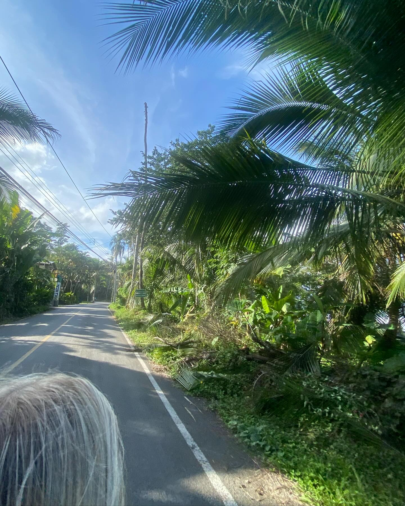
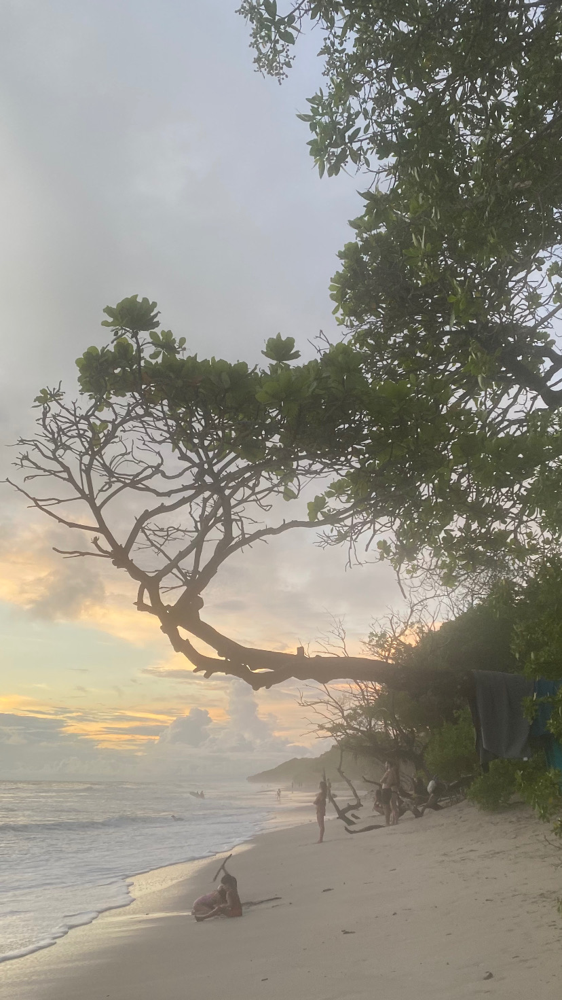
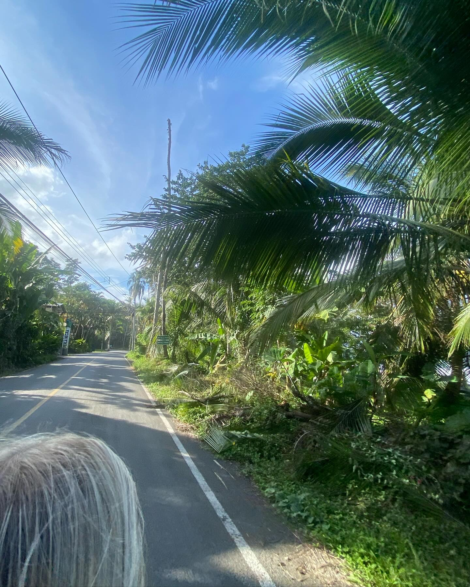
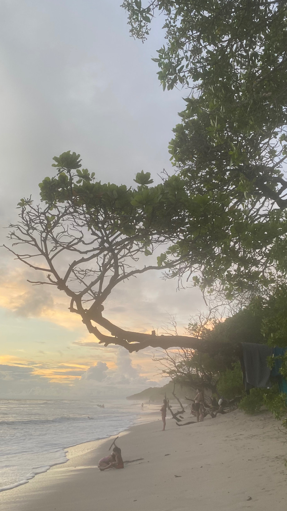

About me
Telma Turku
Born in 2004
Tapiola, Espoo
Student
 



Who am I?
Hello, my name is Telma Turku and I'm a student in Haaga-Helia.
I study Business Information Technology.
I live in Tapiola, in Espoo and I have always lived there.
I have been working alongside my studies since I was 16.
I'm very outgoing and social. I graduated from Haukilahden lukio in 2023
and I had a gap year after that. I worked a lot and also travelled a lot
in Asia and Central America during that year. I have one big brother and
I am really close with my family. I have a lot of good friends
and close ones that I am really grateful for.
My interests
I enjoy spending time with my close ones.
I like to travel a lot and I have many
places on my bucket list that I hope I get to visit.
I have planned to move abroad after graduating. I would like to
live abroad at least a few years to expirience new things.
I enjoy going out to eat, doing different sports and just
doing things that make me happy. I love to be around my close ones but
I also like to have some alone time sometimes.
For example, watching series and chilling by myself.
I like my current job that much that it is always nice work there
and it never feels bad to go there. Main reason for that are the customers. They are
mainly regulars. I have known most of them since I started.
It is always nice to catch up with them and it feels great to see them excited
to see me every week.
Why should you hire me?
I have a lot of experience in customer service. I enjoy learning new
and I adapt quickly to new. I'm very social
and I get along with different types of people easily.
I like challenges and I'm used to working under pressure.
I can also speak many languages and I always do my best.
Get to know me better as an employee from my resume.